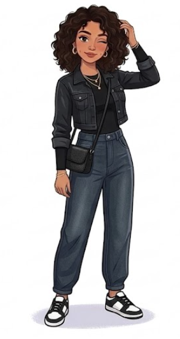

01
DISCOVER
THE CAPSULE
Introduce a small collection of versatile, student-friendly wardrobe pieces.
“Less clothes. More combinations.”PORTFOLIO CASE STUDY ✷
Same Wardrobe. New Plans.
A social-first fashion campaign concept designed to make everyday wardrobes feel more versatile, creative and fun for Indian students.

let's experiment ✷PROJECT TYPE
AUDIENCE
PRIMARY CHANNEL
MY ROLE
Young students often have enough clothes for everyday life, but still struggle to put together outfits that feel different for different plans.
The opportunity was to create a social campaign that makes styling existing pieces feel more creative, practical and interactive.
MEET MAYA
HER EVERYDAY PLANS
“I want to look different, but I don't want to buy a new outfit every time I have somewhere to go.”
THE TENSION
Students may not actually lack clothes. They may lack styling ideas.
RETHINK THE CAPSULE
A minimalist wardrobe philosophy.
Turn familiar pieces into new possibilities.
BUILD → STYLE → PLAY
The campaign moves the audience from discovering the idea to experimenting with it, then gives them a reason to participate.
DISCOVER
Introduce a small collection of versatile, student-friendly wardrobe pieces.
“Less clothes. More combinations.”
EXPERIMENT
Show how one wardrobe staple can move across completely different plans.
Class → Café → College Event
ENGAGE
Turn outfit inspiration into a choice, using interactive A/B/C/D prompts.
“Pick a look. Remix your wardrobe.”Carousels introduce the campaign idea.
Styling content demonstrates possibilities.
Stories turn viewers into participants.
Outfit remixes create community behaviour.
Participation creates a natural consideration path.
Built around real student situations rather than unrealistic fashion scenarios.
Focuses on pieces that can realistically be repeated and restyled.
The audience chooses, responds and remixes instead of simply consuming.
The format can continue across tops, jeans, jackets and other wardrobe staples.
Since this is a campaign concept, no results are fabricated. Instead, these are the signals I would use to evaluate performance.
Reach · Reel views · Profile visits
Saves · Shares · Comments · Story interactions
Profile clicks · Product clicks · Content journeys
UGC · Outfit remixes · Repeat participation
Are people moving from watching the styling to actually participating in it?
FINAL TAKEAWAY ✷
Maya's Experiment turns “I have nothing to wear” into an invitation to experiment.
VIEW THE CAMPAIGN →